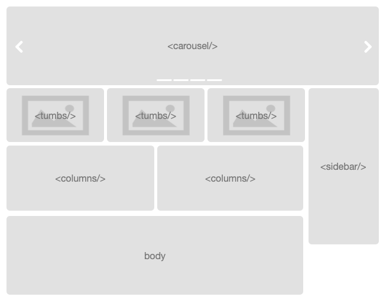

Section layout
When writing Maven site pages using most of the available file formats, such as APT, XDoc or Markdown, it is difficult to write anything more but a straightforward linear page with headings to split the content. Reflow skin allows customizing the page layout and reflowing the page using columns, thumbnails, or with the carousel component.

Usage
support v1.0
element reflow element
The page is divided into sections and each section can be assigned a special layout for its contents. The different layouts are discussed in more detail below. The sections are specified using <sections> element in the per-page or global configuration:
<custom>
<reflowSkin>
...
<pages>
<index>
<!-- index.html sections (examples of all available sections) -->
<sections>
<carousel />
<thumbs>2</thumbs>
<body />
<sidebar />
<columns>3</columns>
</sections>
...
</index>
...
</pages>
...
</reflowSkin>
</custom>
Defining sections
Page sections are indicated using horizontal rule (<hr/>) elements in the generated page. Check your file format reference on how to write them, e.g. "===" for APT or "---" for Markdown.
If sections are configured for a page, its contents are split on the <hr/> element and indicated section layout is used sequentially. For all sections that have undefined layout, <body/> is used (just plain body text). So for the example configuration above, the index page is expected to have at least 5 sections, separated by horizontal rules. Then the first one will be formatted as carousel, followed by a 2-column thumbnails section, followed by a body text with sidebar (2 sections here), then with 3-column section. If there are more sections after this in the text, they will have usual body text layout.
Note that the layout actually defines how the subsections of each section are laid out. Subsections currently are produced by splitting the section at the inner headings.
Body
support v1.0
element reflow layout
Body layout just outputs the page contents as they are. The subsections are output sequentially. If no sidebar (or sidebar ToC) is indicated, the body text occupies full page width. Otherwise it accommodates the sidebar and takes 3/4 of the page.
Body section is indicated using <body /> element without any attributes. The layout is also used as default for sections without explicit layout.
... <sections> ... <body /> ... </sections> ...
Carousel
support v1.0
element reflow layout
Carousel component provides a slideshow of images with captions.

It is normally used in front page to advertise main features or showcase a portfolio, etc. See one in action at the top of the front page of this site, or as a Bootstrap component. Carousel section is indicated using <carousel /> element without any attributes:
... <sections> <carousel /> ... </sections> ...
Carousel is constructed by displaying each subsection in the text as a carousel slide. The first image in the section becomes the carousel image. The subsection header and text consitute the slide caption. For best results, aim for images of the same size, and use h4 headings for the subsections.
Here is a example with 3 carousel items write in markdown:
#### [Title of 1 item](http://company.com/link1) [](http://company.com/link1) Text Description of carousel item. #### [Title of 2 item](http://company.com/link2) [](http://company.com/link2) Text Description of carousel item. #### [Title of 3 item](http://company.com/link2) [](http://company.com/link2) Text Description of carousel item. ---
Columns
support v1.0
element reflow layout
Columns layout puts the section parts into columns. Each subsection is placed in the subsequent column. The layout requires the number of columns to be indicated. Bootstrap uses a 12-column ruler, so for best results, use 1, 2, 3, 4, 6 or 12 column layout. A 2-column layout is used here.
Columns section with the number of columns is indicated using <columns>num</columns> element:
... <sections> ... <columns>2</columns> ... </sections> ...
Thumbnails
support v1.0
element reflow layout
Thumbnails layout is best suited to produce a gallery of images. Each subsection constitutes a thumbnail block, with its first image followed by the subsection heading and text. The themes page uses thumbnails to showcase examples of Bootswatch themes.
Thumbnails are placed in columns, so the same requirements as in columns layout apply. To set the layout with the number of columns, use <thumbs>num</thumbs> element:
... <sections> ... <thumbs>3</thumbs> ... </sections> ...
Sidebar
support v1.0
element reflow layout
Sidebar layout places the section contents into a sidebar with shaded background. If the sidebar follows body section, it is placed side-by-side with the body text. Otherwise it occupies a whole row.
If sidebar ToC is used, it is placed within the first sidebar in the page.
Sidebar section is indicated using <sidebar /> element without any attributes.
... <sections> ... <body /> <sidebar /> ... </sections> ...